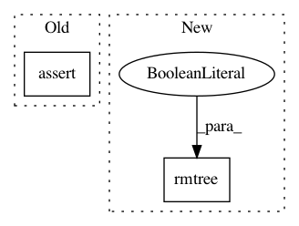

f76501f2265509c94b5d45142df9a3f3f49b10a8,workers/data_refinery_workers/processors/test_transcriptome_index.py,TXTestCase,test_tx,#TXTestCase#Any#,85
Before Change
self.assertEqual(job_context2["length"], "long")
self.assertTrue(os.path.exists(job_context1["output_dir"]))
self.assertTrue(os.path.exists(job_context1["output_dir"]))
self.assertNotEqual(job_context1["output_dir"], job_context2["output_dir"])
self.assertTrue(os.path.exists(job_context1["computed_file"].get_synced_file_path()))
self.assertTrue(os.path.exists(job_context2["computed_file"].get_synced_file_path()))
After Change
// Make sure the work dirs don"t exist cause this will fail the job.
shutil.rmtree("/home/user/data_store/raw/TEST/TRANSCRIPTOME_INDEX/AEGILOPS_TAUSCHII/SHORT/processor_job_1", ignore_errors=True)
shutil.rmtree("/home/user/data_store/raw/TEST/TRANSCRIPTOME_INDEX/AEGILOPS_TAUSCHII/LONG/processor_job_2", ignore_errors=True)
job1 = prepare_job("short")
job_context1 = transcriptome_index.build_transcriptome_index(job1.pk, length="short")
job1 = ProcessorJob.objects.get(id=job1.pk)
In pattern: SUPERPATTERN
Frequency: 3
Non-data size: 2
Instances
Project Name: AlexsLemonade/refinebio
Commit Name: f76501f2265509c94b5d45142df9a3f3f49b10a8
Time: 2018-09-06
Author: kurt.wheeler91@gmail.com
File Name: workers/data_refinery_workers/processors/test_transcriptome_index.py
Class Name: TXTestCase
Method Name: test_tx
Project Name: cesium-ml/cesium
Commit Name: 820de79517aaed577f9af9131f5ec87cd432f04a
Time: 2015-02-06
Author: a.crellinquick@gmail.com
File Name: mltsp/tests/test_custom_feats.py
Class Name:
Method Name: test_make_tmp_dir
Project Name: facebook/FAI-PEP
Commit Name: 46b1ca473c171c54398dfd823d701c1640663820
Time: 2018-04-28
Author: feisun@fb.com
File Name: benchmarking/reporters/simple_local_reporter/simple_local_reporter.py
Class Name: SimpleLocalReporter
Method Name: report